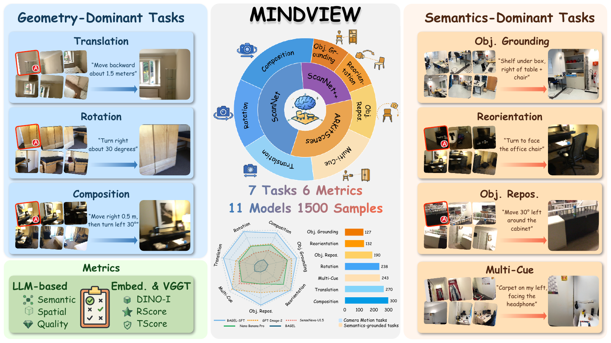
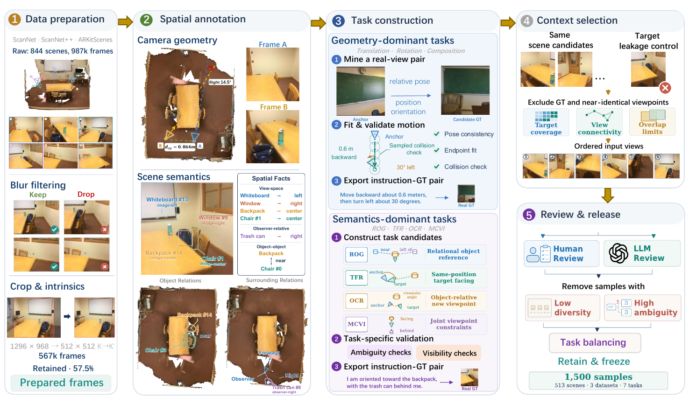
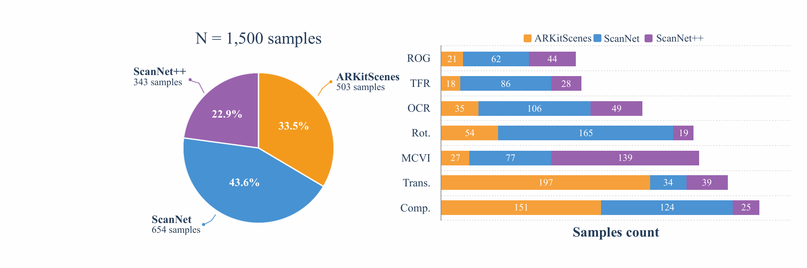
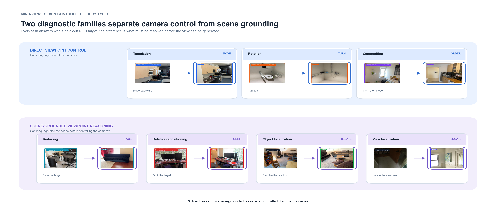
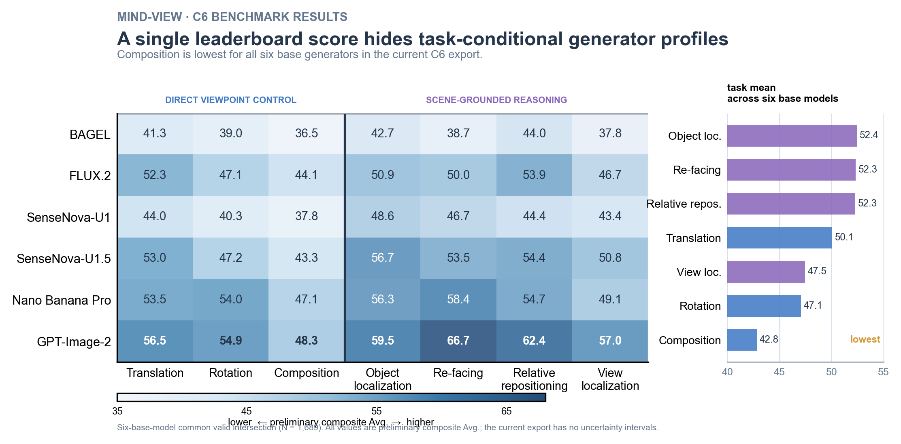
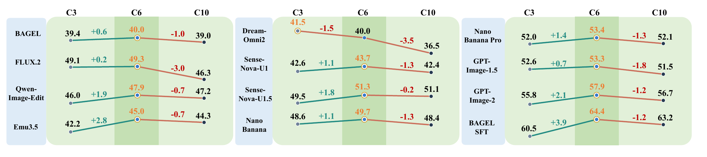
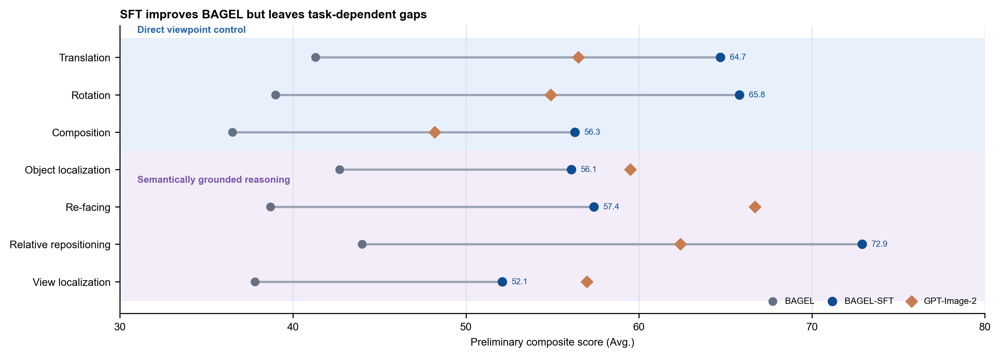

Overview
Spatial intelligence is usually evaluated through questions about objects, relations, and viewpoints. MindView asks a complementary generative question: given several RGB observations of the same indoor scene, can a model generate the view requested by language?
The model must integrate evidence across views, infer the requested camera position and orientation, and render a consistent image. The target image, target pose, depth, and scene annotations remain sealed until evaluation.
Benchmark protocol
MindView separates offline task construction from the model-time interface. Geometry, depth, and annotations are used to validate that a target exists and that the query is well-posed; the generator receives only uncalibrated RGB context views and the language query.

Model input
CK: an ordered set of 3, 6, or 10 RGB observations from one scene, plus one spatial query q.
Model output
A single 512 × 512 RGB image, intended to depict the queried target view while preserving scene identity and layout.
Sealed for scoring
The real target image, camera pose, depth, mesh, and object metadata are withheld until the evaluation pipeline runs.

Task taxonomy
The seven tasks form two diagnostic families. Direct viewpoint control tests whether language can move the camera. Scene-grounded viewpoint reasoning first requires locating objects, resolving relations, or interpreting a reference frame.

Direct viewpoint control
- 01TranslationMove to a requested relative position.
- 02RotationTurn the viewpoint while preserving position.
- 03CompositionCompose ordered translation and rotation actions.
Scene-grounded viewpoint reasoning
- 04Relational object groundingResolve a referred object through its scene relations.
- 05Target-facing reorientationLocate an object and turn toward it from the anchor.
- 06Object-centric repositioningMove around an object and produce an object-facing view.
- 07Multi-cue viewpoint inferenceInfer position and heading from several scene cues.
Evaluation
Generated views are scored against the sealed real target. The six primary components cover content fidelity, language-relevant scene agreement, image quality, and target-view geometry. Scores are averaged within tasks and then equally across the seven tasks.
| Component | What it measures | Evaluator |
|---|---|---|
| DINO-I | Image-level visual content fidelity | DINOv2-Large |
| Semantic | Scene entities and relations | Qwen3-VL judge |
| Spatial | Viewpoint, layout, and visible arrangement | Qwen3-VL judge |
| Quality | Internal coherence and rendering defects | Qwen3-VL judge |
| RScore | Relative target-view rotation consistency | VGGT |
| TScore | Target-view translation consistency | VGGT |
Auxiliary metric. CLIP-I is retained for comparison, but it is outside the six-component Overall score. All primary scores are higher-is-better.


Release
MindView is released as a reproducible benchmark and evaluation package. The public artifacts below correspond to the frozen data, training recipe, inference checkpoint, and metric pipeline used by the project.

Release status. The benchmark, evaluation pipeline, training data, and BAGEL-SFT checkpoint are available. The training-free MindCue strategy is described in the paper but is not part of the open-source code release.